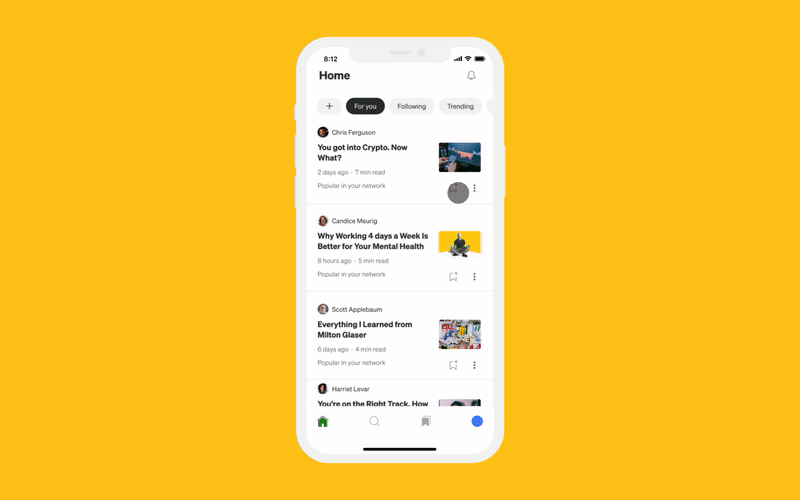

Alex Benzer
May 16, 2022
Listen to stories anytime, anywhere. Audio is now on iOS.
Today, following the success of audio on the Medium website, we’re rolling out the feature to our iOS app. Making it easy to soak up new ideas is the heart of Medium’s mission — and now that’s more convenient than ever. Just grab your iPhone, hit the Listen button, and multi-task away (or kick back on your couch, we won’t judge).
We’ve been blown away by your enthusiasm since we introduced audio a little over a month ago. We’ve learned a lot, too. Writers continue to use audio to proofread their stories, while readers can breeze through their reading lists as they listen at work or around the house. We’ve also heard from readers who find listening to be an easier way to absorb information. Now, they can take that same experience on the go with the improved iPhone app.
The new Listen feature on mobile and desktop is powered in part by AI text-to-speech technology from our friends at Speechify. We aim to continue working with them to expand audio on Medium: that means introducing new product experiences, language options, and voice diversity as it becomes available on their platform.
What else would you like to see us do with audio? How are you using Listen mode now? Sound off (on?) in the comments!
Listener FAQ
Is the audio player available in the mobile apps?
The player is now available in the iOS mobile app on the story screen. If you don’t see it yet, try updating to the newest version in the app store. As for Android, we’re looking to bring audio to that app too. We don’t have clear timing for that, but we’ll be sure to let you know when we do.
Why don’t I see the “Listen” button on a story?
The feature currently supports English text, so the “Listen” button may not appear if the post is not written in English.
Can I change the narrator’s voice and speed?
Yes. To change the playback speed, tap the “1x” button on the audio player. To change the narrator’s voice, tap the “…” button on the audio player, and then choose “Select a voice.”
Can I save stories to a list that automatically plays them aloud?
Not at this time. We’ve heard from many of you that it’s a feature you’d like to see, so it’s something we’re keeping in mind for future product updates.